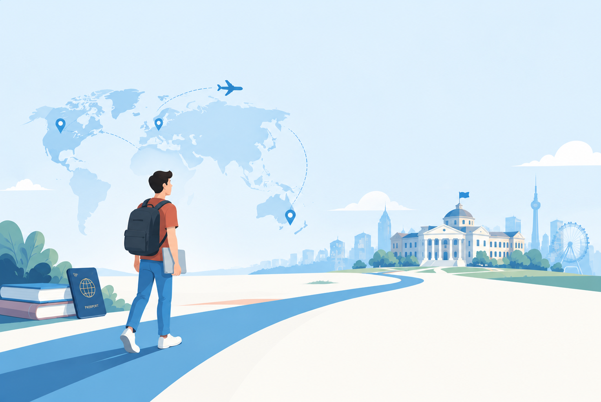

Here I want to show some of my current skills and the technologies I have learned. I still have a lot to learn, and I hope to improve myself step by step in the future.

Where My
Programming Journey Began
I started by learning Python, entering the programming industry as most people do these days. I learned Python mostly from YouTube. About the projects I have, I should say that I designed two games with the library of pygame, which came second in the Kharazmi Festival in our province. But now, with this new perspective, I am looking to improve my Python language and learn more along the way.
Python fundamentalsFirst game development with Pygame
my university Journey
Currently, I am waiting for the results of my undergraduate admission test to come back, and I really hope that I will be able to study in the fields I am interested in at top-level universities in Iran so that I can learn a lot from professors and students, a new environment and city, a whole lot of new experiences, and most importantly, enough focus on studying and studying professionally.
University admission journey (in progress)Finding my ideal field of study (in progress)


my apply Journey
Right now,the most distant goal I am planning for is to study at the world's top universities for a master's degree and then a doctorate. Well, in order to be accepted into these universities, I have to have a full undergraduate period of study, and I am currently preparing myself for that. I also love traveling, and I think the best part of traveling is getting to know different cultures, and that motivates me even more to continue my studies in European or American countries.
Building my academic path (in progress)Preparing for university admission (in progress)